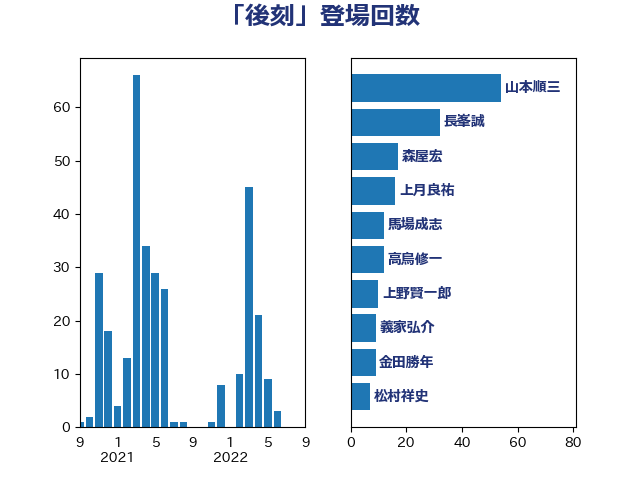

単語「後刻」

| 山本順三 | 自由民主党 | 54 回 |
| 長峯誠 | 自由民主党 | 32 回 |
| 森屋宏 | 自由民主党 | 17 回 |
| 上月良祐 | 自由民主党 | 16 回 |
| 馬場成志 | 自由民主党 | 12 回 |
| 高鳥修一 | 自由民主党 | 12 回 |
| 上野賢一郎 | 自由民主党 | 10 回 |
| 義家弘介 | 自由民主党 | 9 回 |
| 金田勝年 | 自由民主党 | 9 回 |
| 松村祥史 | 自由民主党 | 7 回 |
| 若宮健嗣 | 自由民主党 | 7 回 |
| 野村哲郎 | 自由民主党 | 7 回 |
| 城内実 | 自由民主党 | 5 回 |
| 山本香苗 | 公明党 | 5 回 |
| 林芳正 | 自由民主党 | 5 回 |
| 橋本岳 | 自由民主党 | 5 回 |
| 太田房江 | 自由民主党 | 4 回 |
| 平木大作 | 公明党 | 4 回 |
| 矢倉克夫 | 公明党 | 4 回 |
| 薗浦健太郎 | 自由民主党 | 4 回 |
| 鈴木馨祐 | 自由民主党 | 4 回 |
| あかま二郎 | 自由民主党 | 3 回 |
| 斎藤嘉隆 | 立憲民主党 | 3 回 |
| 長谷川岳 | 自由民主党 | 3 回 |
| 高木毅 | 自由民主党 | 3 回 |
| 中山展宏 | 自由民主党 | 2 回 |
| 山口俊一 | 自由民主党 | 2 回 |
| 山田宏 | 自由民主党 | 2 回 |
| 杉尾秀哉 | 立憲民主党 | 2 回 |
| 森英介 | 自由民主党 | 2 回 |
| 永岡桂子 | 自由民主党 | 2 回 |
| 田島麻衣子 | 立憲民主党 | 2 回 |
| あべ俊子 | 自由民主党 | 1 回 |
| 古屋範子 | 公明党 | 1 回 |
| 宮沢洋一 | 自由民主党 | 1 回 |
| 寺田学 | 立憲民主党 | 1 回 |
| 小里泰弘 | 自由民主党 | 1 回 |
| 山田賢司 | 自由民主党 | 1 回 |
| 浜地雅一 | 公明党 | 1 回 |
| 渡辺博道 | 自由民主党 | 1 回 |
| 玉木雄一郎 | 国民民主党 | 1 回 |
| 田嶋要 | 立憲民主党 | 1 回 |
| 石井浩郎 | 自由民主党 | 1 回 |
| 石橋通宏 | 立憲民主党 | 1 回 |
| 福岡資麿 | 自由民主党 | 1 回 |
| 緒方林太郎 | 無所属 | 1 回 |
| 谷田川元 | 立憲民主党 | 1 回 |
| 赤羽一嘉 | 公明党 | 1 回 |
| 関芳弘 | 自由民主党 | 1 回 |
| 青木一彦 | 自由民主党 | 1 回 |